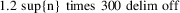

mag − computes TeX fontsizes and magsteps
mag [-Rdpi] magstep . . .
mag [-r] [-Rdpi] fontsize . . .
This tool calculates fontsizes given magsteps. TeXfonts are provided as true sized fonts or as magnifications. The fontsize of a true sized font equals the resolution of the printer (ex. 300). The fontsize of a font magnified $n$ magsteps equals:

rounded to its nearest integer value. Fontnames for TeX fonts normally consists of the name (cmr), pointsize (10), type (pk) and fontsize (360), for example: cmr10.360pk.
The result of mag -R240 -2 0 0.5 1 will be:
167 240 263 288
The inverse function is computed with the -r option. The result of mag -r -R240 167 240 263 288 will be the fontsteps:
-2 0 0.5 1
The UNIX shells allow command substitution. One can write:
mag -r -R240 ‘mag -R240 -2 0 0.5 1‘
18 December, 1989
Piet Tutelaers
University of Technology Eindhoven
Maintained in TeX Live; please send bug reports or other
correspondence
to tex-k@tug.org (http://lists.tug.org/tex-k).